Videos của dự án, tên 001.mp4, 002.mp4… (làm lại thì thêm _v2).ArkStudio-Setup-1.13.exe, bấm Next đến hết. Không cần quyền admin, app cài vào %LOCALAPPDATA%\Programs\Ark Studio.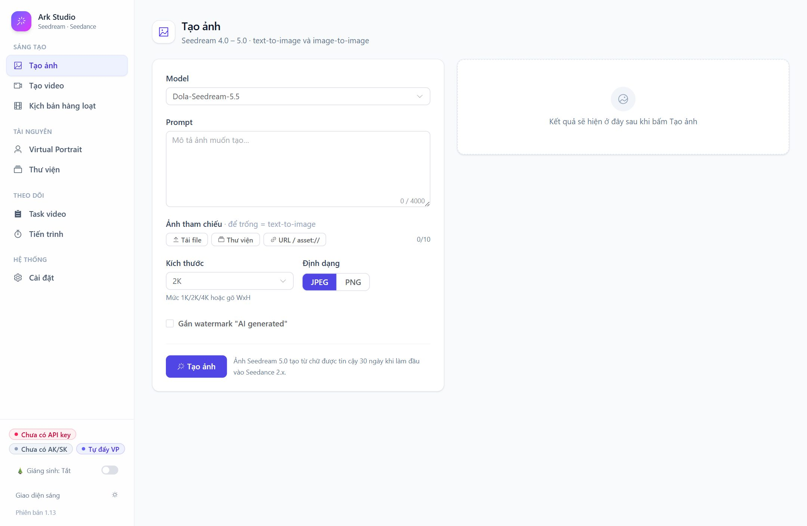
| Menu | Dùng để |
|---|---|
| Tạo ảnh | Tạo ảnh lẻ bằng Seedream: gõ prompt, có thể kèm ảnh tham chiếu. |
| Tạo video | Tạo video lẻ bằng Seedance: từ chữ, từ khung đầu / cuối, hoặc từ ảnh / video / audio tham chiếu. |
| Kịch bản hàng loạt | Làm cả bộ phim theo thư mục dự án: đọc Excel, gán / tạo ảnh tham chiếu, tự gửi từng clip, làm lại clip lỗi. |
| Virtual Portrait | Thư viện asset riêng trên BytePlus (cần AK/SK). Ảnh nhân vật đưa vào đây để Seedance không chặn mặt người. |
| Thư viện | Mọi ảnh / video đã tạo hoặc đã có trong thư mục dự án, lưu trên máy. |
| Task video | Các task Seedance trên BytePlus: trạng thái, lỗi, tải lại video. |
| Tiến trình | Lịch sử việc chạy nền (tạo ảnh, tạo video, đẩy asset, tải về) kèm log chi tiết. |
| Cài đặt | API key, AK/SK, thư mục lưu, tài khoản BOTSD, key 888API. |
Vào Cài đặt (menu dưới cùng bên trái). Trang có 4 khung: Tạo ảnh / video, Virtual Portrait, BOTSD và 888API.
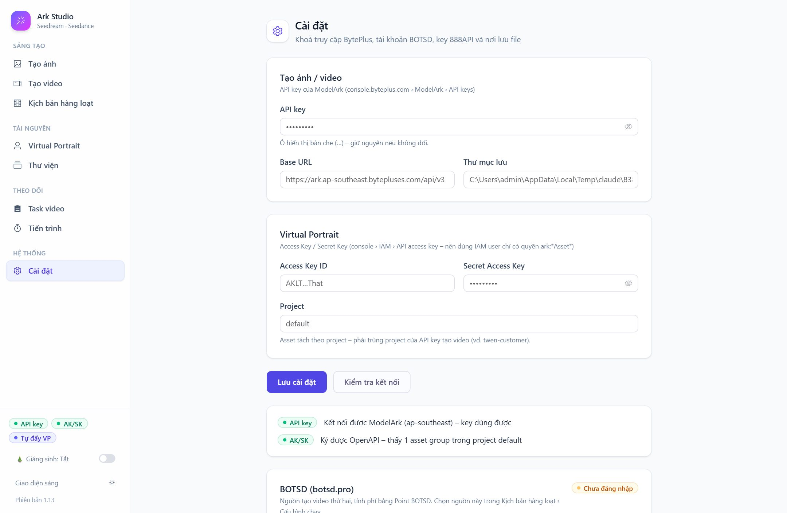
| Ô | Bắt buộc | Lấy ở đâu · ý nghĩa |
|---|---|---|
| API key | có | console.byteplus.com › ModelArk › API keys. Dùng để tạo ảnh, tạo video, AI viết prompt và phân tích lỗi. |
| Base URL | giữ nguyên | Mặc định https://ark.ap-southeast.bytepluses.com/api/v3. |
| Thư mục lưu | tuỳ chọn | Nơi lưu ảnh / video. Mặc định Documents\BytePlus Ark Studio. Ảnh vào images\, video lẻ vào videos\. |
| Access Key ID / Secret Access Key | chỉ khi dùng Virtual Portrait | console › IAM › API access key. Nên tạo IAM user chỉ có quyền ark:*Asset*. |
| Project | khi có AK/SK | Asset tách theo project, phải trùng project của API key tạo video (vd default). |
…). Nếu không đổi key thì để nguyên.%USERPROFILE%\.byteplus-ark\config.properties, không lưu vào dữ liệu dự án và không hiện ra giao diện. Không gửi file này cho người khác. Mỗi người dùng key của chính mình.Hai nguồn này chỉ dùng trong Kịch bản hàng loạt, chọn ở Cấu hình chạy. Nếu chỉ dùng BytePlus thì bỏ qua phần này.
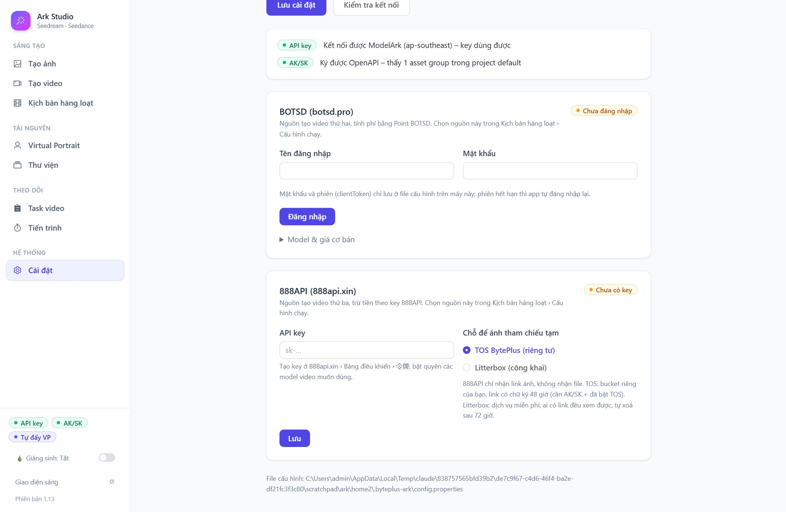
| Nguồn | Cách thêm | Tính tiền |
|---|---|---|
| BOTSD | Nhập Tên đăng nhập + Mật khẩu → Đăng nhập. Bấm Xem số dư để thấy Point và bảng giá. Phiên hết hạn thì app tự đăng nhập lại. | Trừ Point BOTSD. Clip làm tròn lên 5 / 10 / 15 / 30 giây. |
| 888API | Tạo key ở 888api.xin › Bảng điều khiển › 令牌, bật quyền các model video. Dán key → Lưu. Chọn Chỗ để ảnh tham chiếu tạm: TOS BytePlus (riêng tư, cần AK/SK và đã bật TOS) hoặc Litterbox (công khai, tự xoá sau 72 giờ). | Trừ số dư key 888API (giá theo model, ghi trong danh sách model). |
RỘNGxCAO, vd 2560x1440. Định dạng: JPEG / PNG.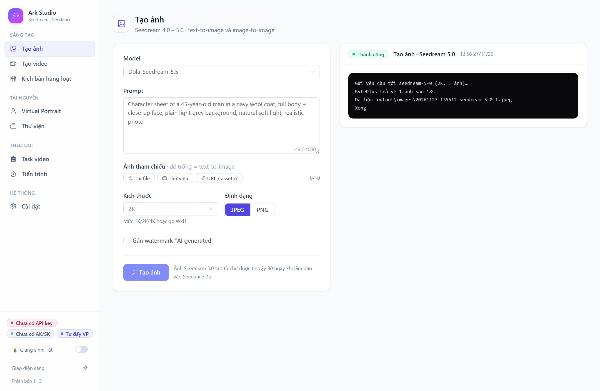
<Thư mục lưu>\images\IMG_<ngày>_<giờ>_1.jpeg và đồng thời có trong Thư viện.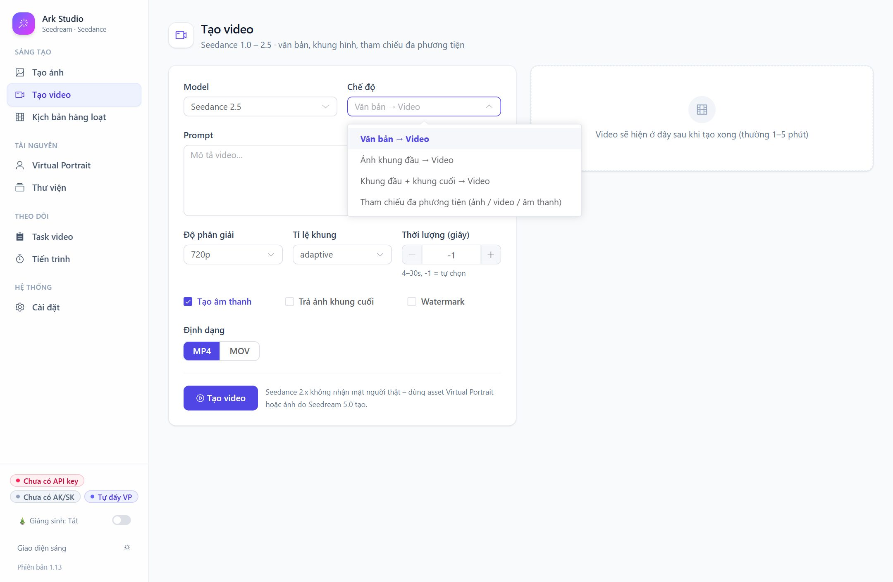
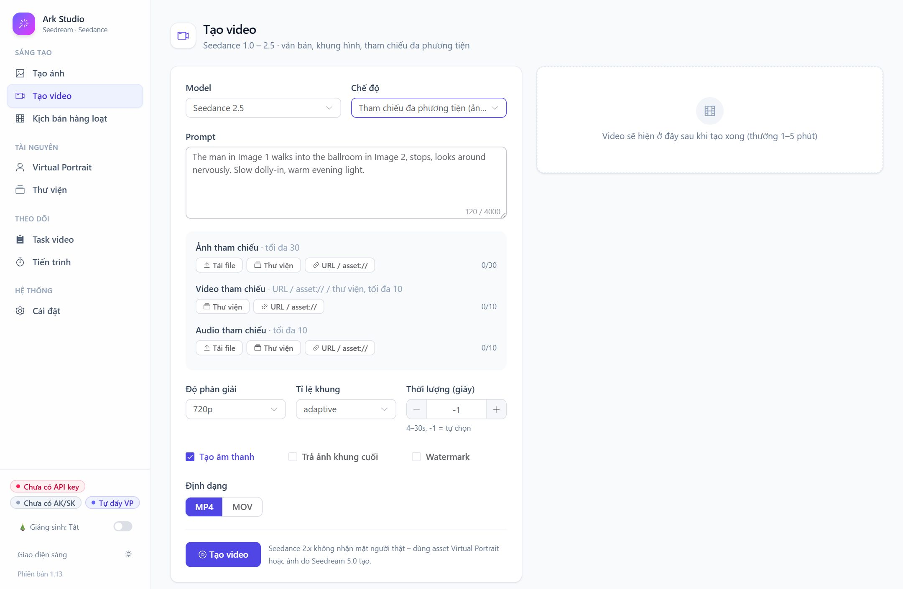
| Chế độ | Khi nào dùng |
|---|---|
| Văn bản → Video | Chỉ có prompt. |
| Ảnh khung đầu → Video | Video bắt đầu đúng từ một ảnh. |
| Khung đầu + khung cuối → Video | Cho cả ảnh mở đầu và ảnh kết thúc (chỉ model hỗ trợ). |
| Tham chiếu đa phương tiện | Giữ nhân vật / bối cảnh / trang phục từ nhiều ảnh, kèm video / audio tham chiếu. Trong prompt gọi Image 1, Image 2, Video 1… theo đúng thứ tự đã thêm. |
adaptive = theo ảnh), Thời lượng: khoảng giây cho phép hiện ngay dưới ô; -1 = để model tự chọn (nếu model hỗ trợ).<Thư mục lưu>\videos\<task id>.mp4.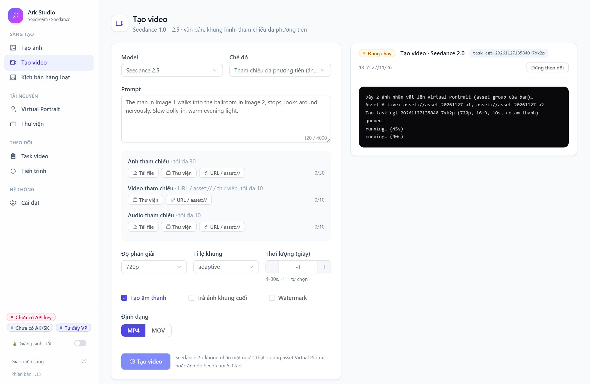
InputImageSensitiveContentDetected). Hãy dùng ảnh do Seedream 5.0 tạo, hoặc đưa ảnh nhân vật vào Virtual Portrait rồi dùng asset://. Nếu đã bật Tự đẩy (nhãn Tự đẩy VP ở góc dưới trái) thì app tự làm việc này.Mỗi bộ phim là một thư mục. App tự nhận file Excel theo tên cột và nhận thư mục con theo tên. File Excel chỉ được đọc, không bị sửa.
Ảnh tham chiếu, Ảnh chờ duyệt, Videos chưa có thì app tự tạo khi cần. Tên thư mục viết không dấu (Anh tham chieu) hoặc tiếng Anh (reference, pending, video) cũng nhận. Nếu có nhiều file Excel cùng loại, app cho chọn file khi quét.all-video-prompts.xlsx)Mỗi dòng là một cảnh (một clip video). App cần ít nhất cột STT segment và Reference IDs.
| Tên cột | Bắt buộc | Nội dung · ví dụ |
|---|---|---|
| STT segment | có | Số cảnh: 1, 2… Video lưu thành 001.mp4, 002.mp4. |
| Nội dung prompt của segment | có | Prompt video tiếng Anh, gửi nguyên văn. Gọi ảnh bằng @MÃ, vd @CHAR-BITSY-1 = Bitsy (woman, 60 years old). |
| Reference IDs | có | Các mã ảnh dùng trong cảnh, cách nhau bằng ;. Thứ tự ở đây là thứ tự Ảnh 1, Ảnh 2… gửi đi.CHAR-BITSY-1; CHAR-CELESTE-1; LOC-10; PROP-3 |
| Thời lượng (giây) | nên có | 15, 13… Ngoài khoảng model nhận thì app kẹp / làm tròn (xem mục 6). |
| Tóm tắt segment (tiếng Việt) | tuỳ chọn | Hiện trong danh sách clip cho dễ đọc. |
| Chú thích ID nhân vật | tuỳ chọn | CHAR-BITSY-1 = Bitsy Hollister · trang phục: … |
reference-prompts.xlsx)| Tên cột | Bắt buộc | Nội dung · ví dụ |
|---|---|---|
| Reference ID | có | CHAR-DANIEL-1, LOC-10, PROP-3 |
| Prompt tạo reference | có | Prompt để Seedream vẽ ảnh tham chiếu cho mã đó. Sửa được trong app (nút Prompt). |
| Chú thích ID nhân vật | tuỳ chọn | Tên / mô tả ngắn nhân vật, trang phục. |
CHAR_…, LOC_…, PROP_…) nhập bằng nút Nhập Excel (cách cũ). Video của dự án kiểu này lưu ở <Thư mục lưu>\videos\<dự án>.Tên file ảnh chính là mã. App đọc tên file để biết ảnh thuộc mã nào.
| Loại | Mẫu tên | Ý nghĩa |
|---|---|---|
| Nhân vật | CHAR-TÊN-số | CHAR-DANIEL-1, CHAR-DANIEL-2 = cùng nhân vật Daniel, 2 bộ trang phục. Bộ đầu được dùng làm tham chiếu khuôn mặt cho các bộ sau. |
| Bối cảnh | LOC-số | LOC-10 = phòng tiệc Crown Room. |
| Đạo cụ | PROP-số | PROP-3 = chiếc trâm sapphire. |
.jpg, .jpeg, .png, .webp, .bmp.Ảnh tham chiếu/; ảnh trong _cu/ bị bỏ qua.Ảnh nhân vật tốt nhất là tấm "character sheet": toàn thân, cận mặt và chi tiết trang phục, nền trơn, ánh sáng tự nhiên. Ảnh bối cảnh chụp rộng cả không gian. Ảnh đạo cụ chụp rõ vật thể.
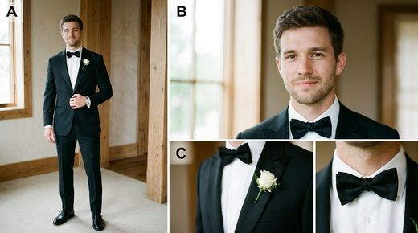
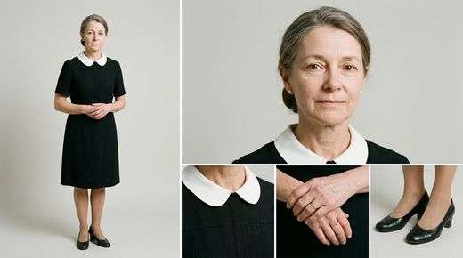
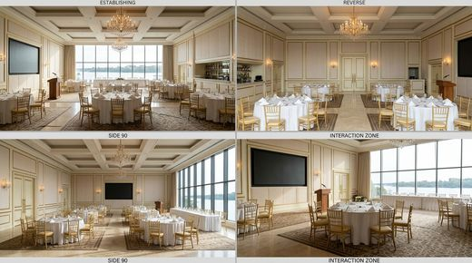
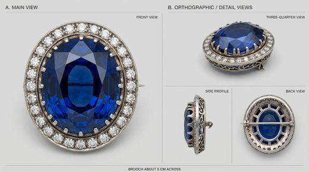
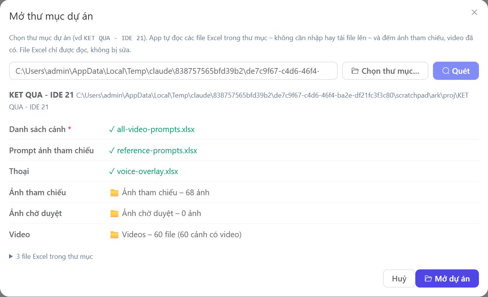
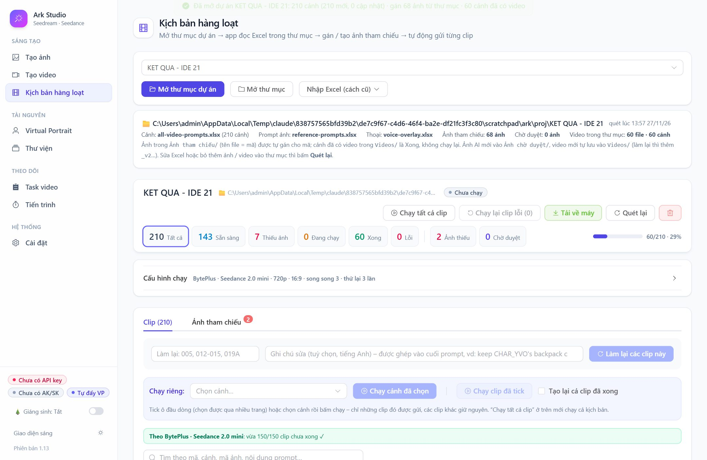
| Ô đếm | Ý nghĩa (bấm vào ô để lọc danh sách) |
|---|---|
| Tất cả | Tổng số clip (cảnh) trong Excel. |
| Sẵn sàng | Đủ ảnh, chờ chạy. |
| Thiếu ảnh | Clip có mã chưa gán ảnh. Clip này sẽ không được gửi cho đến khi đủ ảnh. |
| Đang chạy / Xong / Lỗi | Đang tạo trên máy chủ / đã có video / thất bại sau đủ số lần thử. |
| Ảnh thiếu / Chờ duyệt | Số mã ảnh chưa có ảnh / số ảnh AI đang chờ bạn duyệt. |
Videos/ (001.mp4, 001_v2.mp4…) được tính là Xong. Nếu bạn sửa Excel hoặc chép thêm ảnh / video vào thư mục, bấm Quét lại (chỉ bấm được khi dự án đang dừng).Bấm dòng Cấu hình chạy để mở. Chỉnh xong nhớ bấm Lưu cấu hình.
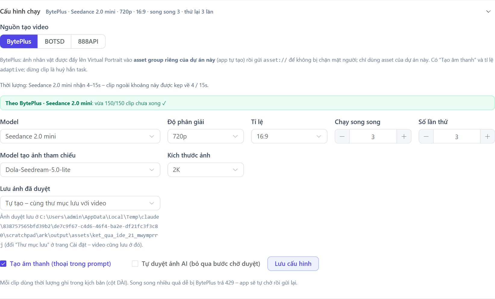
| Mục | Giải thích |
|---|---|
| Nguồn tạo video | BytePlus (mặc định, có "Tạo âm thanh", tỉ lệ adaptive, dừng clip là huỷ hẳn task) · BOTSD · 888API. Hai nguồn sau không có lệnh huỷ: dừng chỉ là ngừng theo dõi, tiền đã trừ. |
| Model / Độ phân giải / Tỉ lệ | Model video và chất lượng. Đổi model thì cảnh báo của từng clip được tính lại ngay, kể cả trước khi Lưu. |
| Chạy song song | Số clip gửi cùng lúc (1–50). Nên để 3. Đặt nhiều quá thì máy chủ dễ trả lỗi 429; khi đó app tự chờ rồi gửi lại. |
| Số lần thử | Số lần thử lại một clip khi gặp lỗi tạm thời (mạng, máy chủ bận). |
| Model tạo ảnh tham chiếu / Kích thước ảnh | Seedream dùng khi bấm "Tạo bằng AI". |
| Lưu ảnh đã duyệt | Với dự án theo thư mục, ảnh duyệt vào Ảnh tham chiếu/. Có thể chọn chép thêm vào thư mục riêng (tự tạo NHAN VAT / BOI CANH / DAO CU). |
| Tạo âm thanh | Chỉ BytePlus. Video có thoại theo prompt. |
| Tự duyệt ảnh AI | Bỏ bước chờ duyệt: ảnh AI dùng luôn. Tiết kiệm thời gian nhưng không kiểm tra được ảnh trước khi tốn tiền video. |
Ở cột Cảnh, clip bị cắt có dòng đỏ "gửi 15s – bị cắt 3s". Hãy xem dòng này trước khi chạy.
Mở tab Ảnh tham chiếu. Số đỏ trên tab là số mã còn thiếu ảnh. Dải tổng quan liệt kê mọi mã theo loại (Nhân vật / Bối cảnh / Đạo cụ). Mã đỏ là mã thiếu; bấm vào một mã để nhảy tới thẻ ảnh của mã đó.
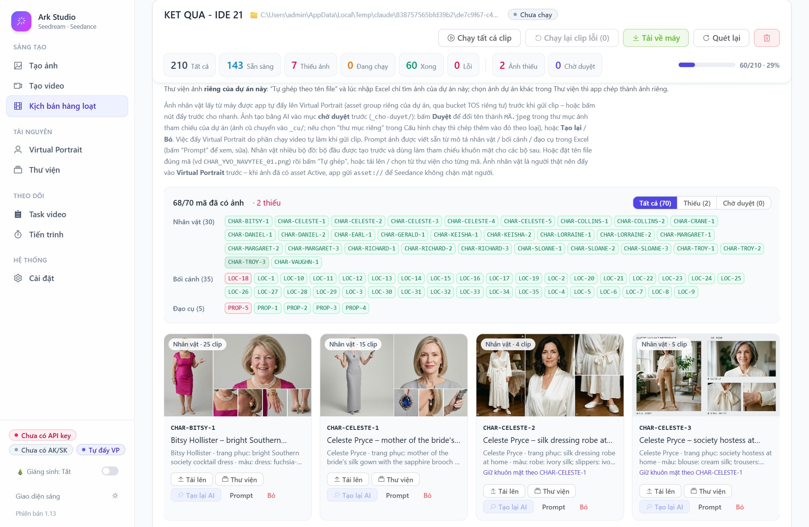
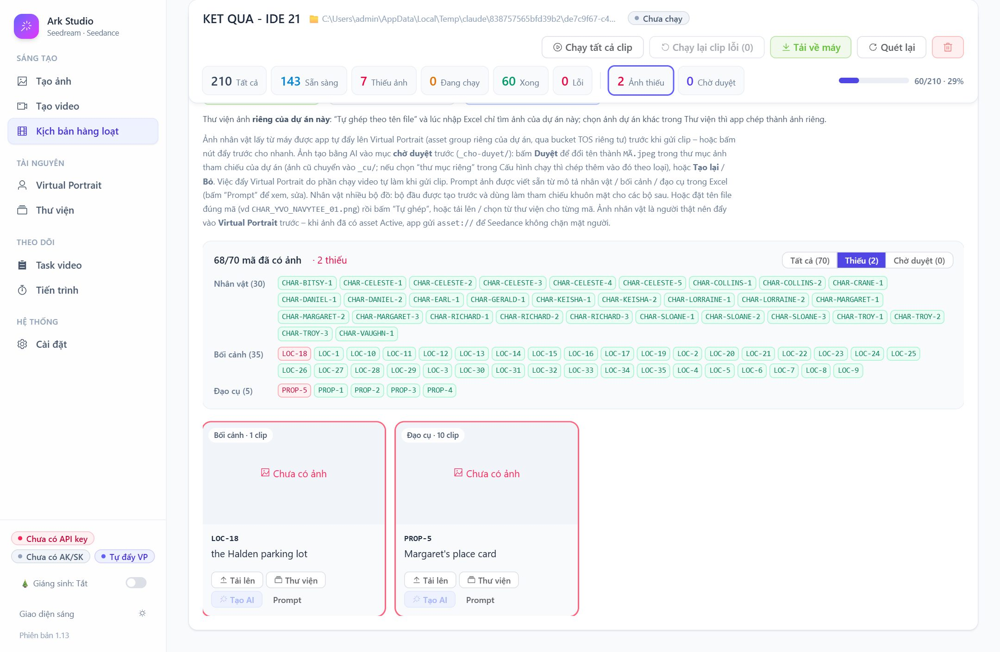
| Nút | Tác dụng |
|---|---|
| Tải lên / Thư viện | Gán ảnh cho đúng thẻ đó: chọn file trên máy hoặc ảnh đã có trong Thư viện. |
| Tự ghép theo tên file | Gán hàng loạt ảnh có tên đúng mã (chỉ tìm ảnh của dự án này). |
| Nhập thư mục ảnh | Chọn một thư mục ảnh, app ghép theo tên rồi chép vào dự án. |
| Tạo AI / Tạo lại AI | Seedream vẽ ảnh cho mã đó theo prompt ảnh (tốn tiền tạo ảnh). |
| Tạo bằng AI các ảnh còn thiếu (N) | Tạo một lượt cho mọi mã còn thiếu. |
| AI viết prompt ảnh (N) | Mã chưa có prompt thì AI viết prompt từ mô tả trong Excel. |
| Prompt | Xem / sửa prompt ảnh. Lưu & tạo ảnh để tạo luôn. Prompt đã sửa tay sẽ không bị ghi đè khi quét lại Excel. |
| Đẩy N ảnh nhân vật lên Virtual Portrait | (BytePlus) Đẩy trước ảnh nhân vật cho nhanh. Nếu không bấm, app cũng tự đẩy trước khi gửi clip. |
| Tải hết ảnh về (.zip) | Gom toàn bộ ảnh tham chiếu thành một file zip. |
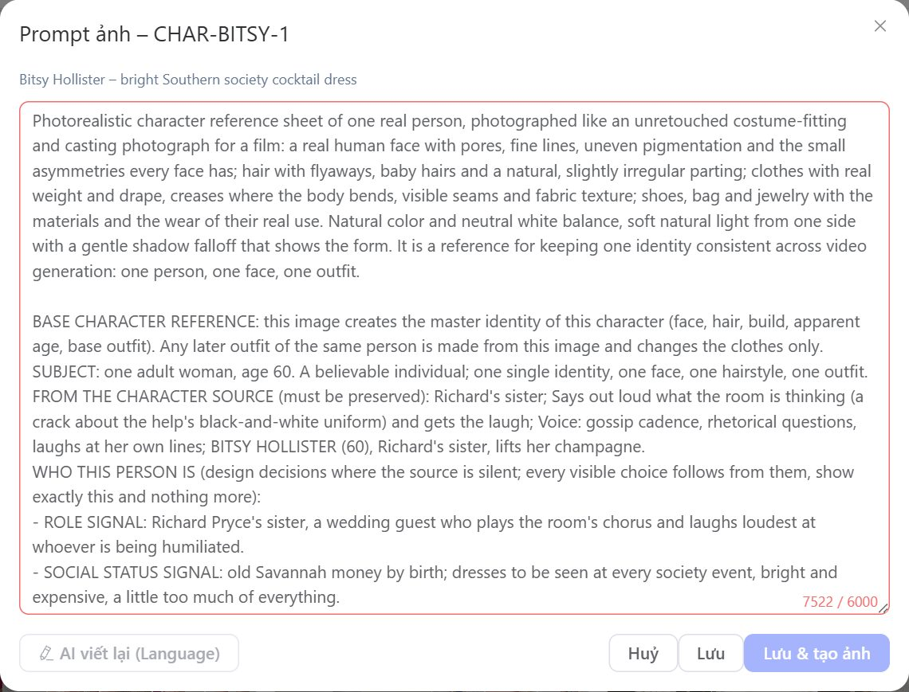
Ảnh chờ duyệt/. Thẻ có viền tím và 3 nút: Duyệt, Tạo lại, Bỏ ảnh mới. Nếu mã đã có ảnh, góc thẻ hiện thêm "ảnh cũ" để so sánh.MÃ.jpeg trong Ảnh tham chiếu/; ảnh cũ chuyển vào _cu/. Muốn duyệt hết một lần thì bấm Duyệt tất cả (N).| Nút | Tác dụng |
|---|---|
| Tạo ảnh thiếu + chạy video | Hiện khi còn mã thiếu ảnh: tạo ảnh AI cho mã thiếu, rồi chạy video. |
| Chạy tất cả clip | Gửi mọi clip đang chờ của cả kịch bản, theo thứ tự, song song tối đa N. |
| Tạm dừng | Ngừng gửi clip mới. Clip đang tạo vẫn chạy cho xong. |
| Chạy lại clip lỗi (N) | Đưa các clip lỗi / đã huỷ về hàng chờ và chạy lại. |
| Tải về máy | Tải dạng zip: tất cả video đã xong, tất cả ảnh tham chiếu, hoặc cả hai. |
| Quét lại · Mở thư mục · 🗑 | Đọc lại thư mục · mở thư mục dự án trong Explorer · xoá dự án khỏi app. App hỏi thêm có xoá cả ảnh tham chiếu không: chọn Giữ ảnh nếu chưa chắc. |
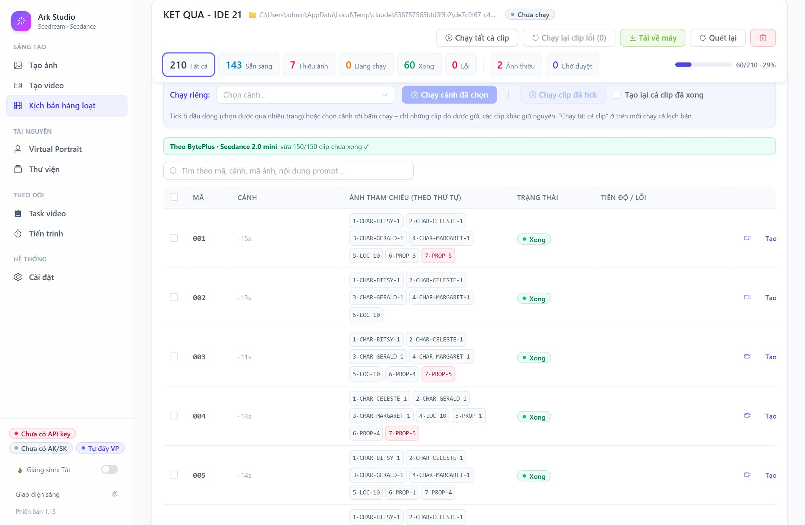
Bấm vào một dòng (hoặc Chi tiết) để mở rộng: prompt Seedance (gửi nguyên văn, sửa được), thời lượng, video đã tạo, lời thoại, mã task.
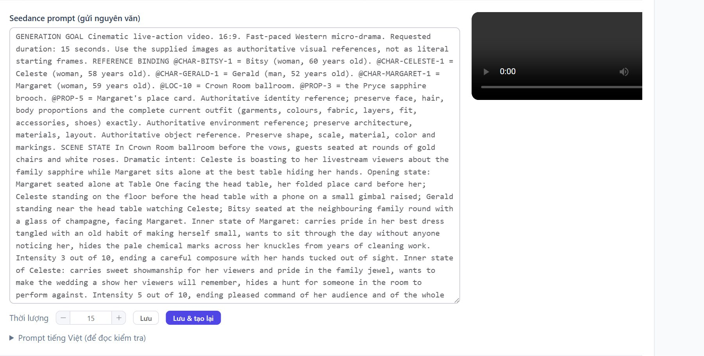
005, 012-015, 019A.keep CHAR_YVO's backpack on her left shoulder.005_v2.mp4, video cũ vẫn còn.Clip lỗi vì vi phạm nội dung có khung đỏ Vì sao bị chặn. Bấm Phân tích vì sao bị chặn: AI (BytePlus) đọc prompt và ảnh, chỉ ra từng đoạn có thể bị chặn, lý do và cách sửa. Bấm Dùng prompt đã sửa rồi Lưu & tạo lại.
Đây là thư viện asset riêng của bạn trên BytePlus. Ảnh nhân vật đưa vào đây, khi ở trạng thái Active, sẽ được gửi cho Seedance dưới dạng asset://…, nên không bị chặn mặt người.
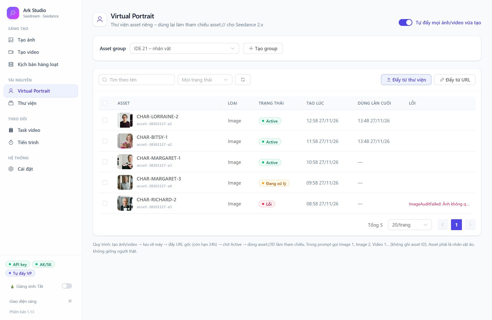
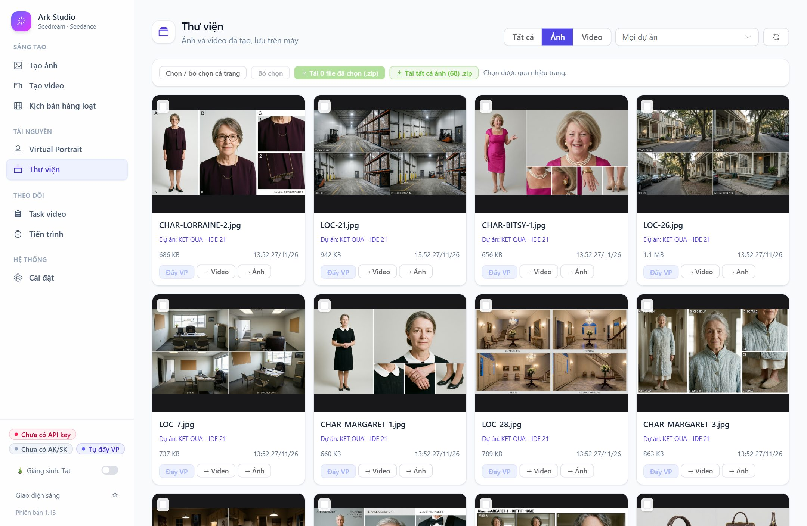
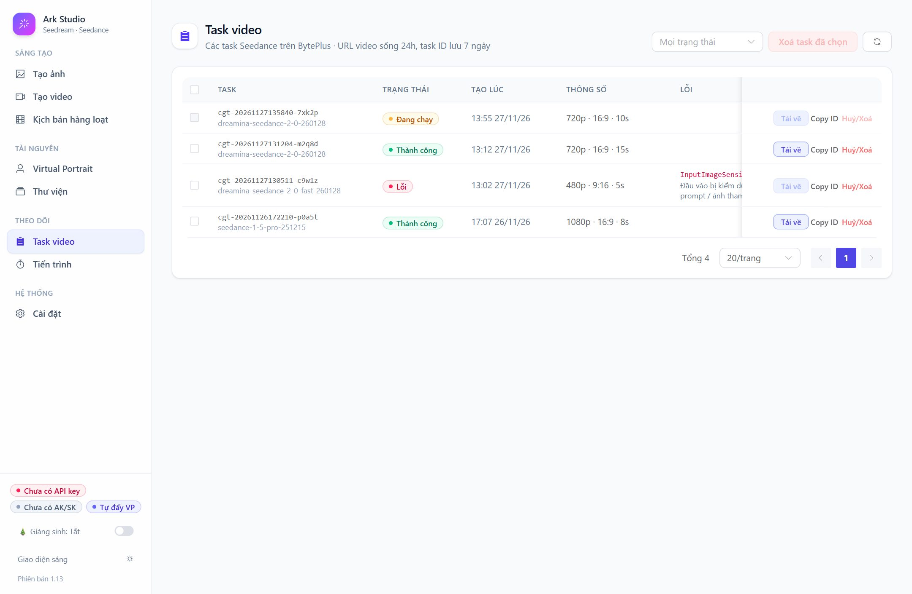
URL video trên BytePlus chỉ sống 24 giờ, task ID lưu 7 ngày. Video chưa kịp tải về thì vào đây bấm Tải về trước khi hết hạn.
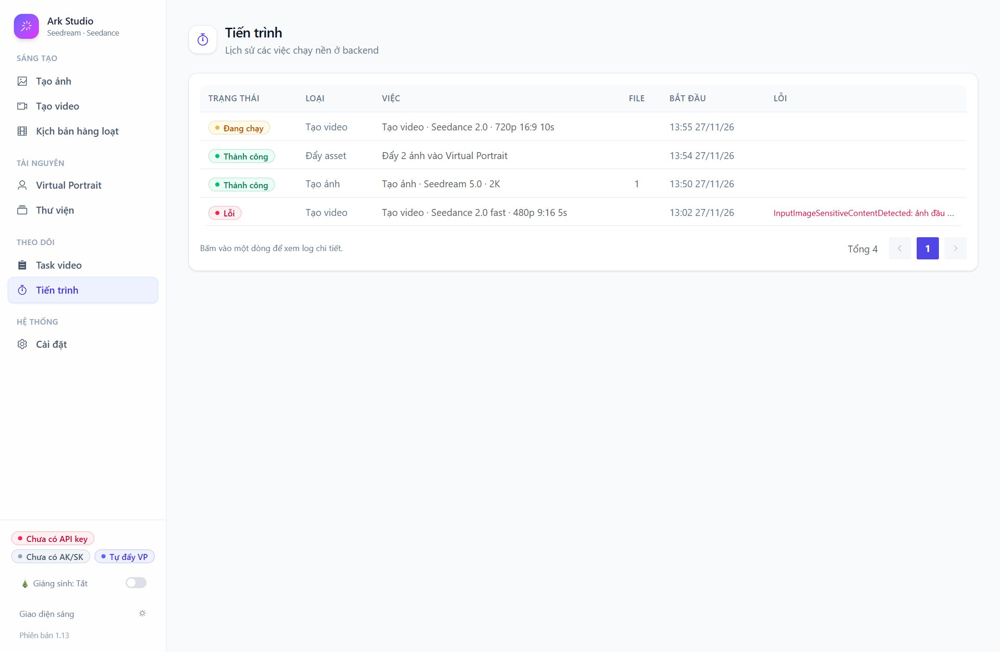
| Thông báo | Nguyên nhân · cách xử lý |
|---|---|
ModelNotOpen | Model chưa được kích hoạt trên tài khoản BytePlus. Vào console › ModelArk › kích hoạt model đó, hoặc chọn model khác. |
InputImageSensitiveContentDetected / ảnh có người thật | Ảnh tham chiếu bị coi là người thật. Đưa ảnh vào Virtual Portrait (asset Active), hoặc tạo lại ảnh bằng Seedream 5.0. |
…SensitiveContentDetected (prompt / video) | Nội dung prompt bị chặn. Bấm Phân tích vì sao bị chặn, sửa đoạn được chỉ ra, rồi tạo lại. |
| 429 / "BytePlus đang giới hạn tốc độ – tạm nghỉ đến …" | Gửi quá nhanh. App tự chờ rồi gửi lại. Nếu gặp thường xuyên, giảm Chạy song song. |
| API key sai / 401 | Key hết hạn hoặc dán thiếu. Dán lại ở Cài đặt → Kiểm tra kết nối. |
| "888API chưa lấy được link ảnh – chạy bây giờ sẽ lỗi" | Chưa bật TOS hoặc thiếu AK/SK. Bấm Đổi sang Litterbox, hoặc bật TOS rồi bấm Kiểm tra lại. |
| BOTSD / 888API: hết số dư (402), đạt giới hạn task (409) | Nạp thêm Point / số dư. Với 409, app tự chờ 30 giây rồi gửi tiếp. |
| "Mất kết nối backend" (góc dưới trái) | Phần chạy ngầm của app đã tắt. Thoát app ở khay hệ thống rồi mở lại. |
| Clip "Chờ ảnh" mãi không chạy | Còn mã chưa có ảnh hoặc ảnh AI chưa duyệt. Vào tab Ảnh tham chiếu, lọc Thiếu / Chờ duyệt. |
Gửi kèm file log %USERPROFILE%\.byteplus-ark\logs\ark-studio.log (dán đường dẫn này vào thanh địa chỉ của File Explorer để mở), kèm ảnh chụp màn hình và mã clip / mã task bị lỗi.
Thoát app (khay › Thoát), rồi vào Cài đặt Windows › Ứng dụng › Ark Studio › Gỡ cài đặt. Dữ liệu và key ở %USERPROFILE%\.byteplus-ark được giữ lại; xoá thư mục này nếu muốn bỏ hẳn. Ảnh / video ở Thư mục lưu và thư mục dự án không bị xoá.
Videos/ nếu không muốn làm lại: cảnh đã Xong mà mất video sẽ quay về hàng chờ khi quét lại.Ảnh tham chiếu/_cu/. Muốn dùng lại ảnh cũ thì chép ra ngoài rồi Quét lại.%USERPROFILE%\.byteplus-ark cho người khác vì nó chứa key và mật khẩu BOTSD.Đóng cửa sổ có làm dừng video đang tạo không?
Không. App chạy nền đến khi xong việc rồi tự thoát. Muốn thoát ngay thì chuột phải biểu tượng ở khay › Thoát.
Video / ảnh lưu ở đâu?
Dự án theo thư mục: Videos/ và Ảnh tham chiếu/ của thư mục dự án. Tạo lẻ: <Thư mục lưu>\images và \videos. Khay › Mở thư mục lưu để mở nhanh.
Có chạy 2 dự án cùng lúc được không?
Được. Mỗi dự án có nút Chạy / Tạm dừng riêng, nhưng hai dự án dùng chung giới hạn tốc độ của tài khoản.
Sửa Excel rồi thì làm gì?
Tạm dừng dự án → Quét lại. Clip có prompt / ảnh thay đổi quay về hàng chờ; ảnh đã gán và prompt ảnh đã sửa tay được giữ nguyên.
Chuyển sang máy khác?
Cài app ở máy mới, nhập lại key, rồi mở lại đúng thư mục dự án. Video và ảnh đã có trong thư mục được nhận lại tự động.